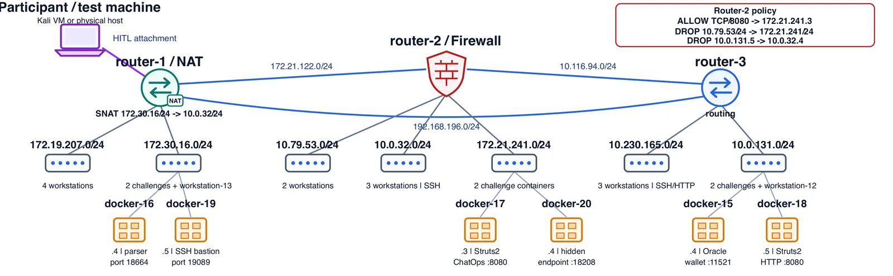
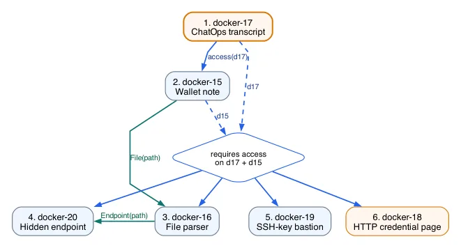

O Problema da Lacuna entre Descrição e Execução
Construir cenários para cyber-ranges e competições Capture-The-Flag (CTF) é uma tarefa intensiva em mão de obra. Os autores precisam coordenar infraestrutura, serviços vulneráveis, caminhos de ataque, artefatos e condições de sucesso. Embora Grandes Modelos de Linguagem (LLMs) possam propor exercícios detalhados, descrições plausíveis não garantem software implantável ou objetivos verificáveis. A literatura atual frequentemente avalia a solidez, o realismo ou a criatividade das narrativas geradas, mas isso não estabelece se o cenário pode ser instanciado e operado na prática.
A Proposta: ScenarioForge
O paper apresenta o ScenarioForge, um framework que transforma requisitos de alto nível em topologias fundamentadas em recursos, serviços, tráfego, segmentação e cadeias de desafios. Diferente de abordagens anteriores que tratam a saída do LLM como o ambiente final, o ScenarioForge trata a saída como uma proposta. Um componente backend decide quais ativos instalados podem realizar essa proposta e registra os vínculos resultantes. Essa divisão estabelece uma fronteira de confiança explícita: conteúdo gerado plausível nunca é aceito como evidência de um recurso disponível ou um objetivo suportado.
Arquitetura e Representação Intermediária
O coração do sistema é um documento XML canônico que persiste durante todo o fluxo de trabalho, desde a autoria até a execução. O LLM refina este XML, mas nunca invoca diretamente o CORE (Common Open Research Emulator), Docker ou shells remotos. A representação registra infraestrutura, configuração de nós, estado dos desafios e dependências. Cenários parcialmente especificados preservam as restrições do usuário enquanto o modelo preenche campos ausentes. Todo valor gerado deve resolver para uma entrada de catálogo ou capacidade do backend.
Síntese Guiada por LLM e Construção de Recursos
O LLM extrai restrições, decompondo o pedido em componentes de infraestrutura e exercício. Ele preenche papéis e relacionamentos não especificados, serializando o resultado em XML restrito. Restrições explícitas permanecem autoritárias; se um usuário solicita uma vulnerabilidade específica, ela é preservada, enquanto a topologia ao redor pode ser gerada. O sistema inclui um Generator Builder assistido por IA que usa LLMs locais ou em nuvem para criar ou refinar geradores de recursos personalizados. Isso permitiu desenvolver 85 geradores de desafios customizados, que são testados e reparados antes da instalação.
Ancoragem em Recursos Executáveis
A etapa de grounding (ancoragem) é crítica. Um elemento é retido apenas se mapear para um ativo executável ou configuração determinística suportada. Serviços vulneráveis resolvem-se para ambientes Docker Compose catalogados, incluindo portas e procedimentos de inicialização. Geradores de recursos de desafio produzem artefatos, flags e instruções de implantação. Se um serviço ou versão não estiver disponível ou for incompatível, a saída inicial permanece como proposta. A resolução determinística adiciona hosts necessários, reconcilia identificadores e rejeita escolhas de catálogo que não correspondem aos pré-requisitos de tempo de execução.

Validação Baseada em Execução
O ScenarioForge não confia em descrições. O cenário resolvido é instanciado no CORE 9.2 e julgado usando observações do ambiente implantado. As verificações de runtime cobrem nós, contêineres, serviços, portas, injetores, segmentação de rede e artefatos. Um script de solução percorre a sequência de desafios e registra se cada passo passou, falhou, foi inconclusivo ou foi ignorado. XML, logs, resumos e relatórios preservam as evidências. Isso garante que cada etapa do exercício seja verificável individualmente, criando um registro auditável da execução.
O Conjunto de Dados ScenarioForge
Os autores lançam o ScenarioForge Execution Dataset, contendo 226 cenários materializados. Esses cenários cobrem 294 imagens do Vulhub (um repositório de vulnerabilidades Docker) e todos os 85 geradores de recursos de desafio customizados desenvolvidos com a scaffolding assistida por IA. Todos os 226 cenários passaram pela construção, pré-visualização, sequenciamento, implantação, validação rigorosa de runtime e verificações de artefato ao vivo. Seus 867 passos, cada um um objetivo de desafio verificável individualmente, compreendem 457 instâncias baseadas em vulnerabilidade e 410 baseadas em recursos gerados.

Benchmark de Autoria com IA
Em um benchmark separado com 50 prompts correspondentes, o ScenarioForge combinado com Qwen3.8 e com GPT5.6 alcançou 50/50 (100%) de sucesso na topologia/construção e 160/160 campos de intenção. Isso demonstra que o modelo open-weight menor, Qwen3.8, igualou o modelo frontier dentro do ScenarioForge. A geração direta de frontier, mesmo com scaffolding cumulativo (estrutura, vocabulário, política e guia de imagem de container), atingiu apenas 41/50 builds e 147/160 campos. O framework estruturado é essencial para a confiabilidade.
Limitações e Escopo do Experimento
É importante notar que o benchmark testado omitiu a geração downstream de recursos de desafio, o sequenciamento de dependências/flags, a implantação e a validação ao vivo. O foco foi na autoria de topologia e na satisfação dos campos de intenção. Além disso, o sistema depende da disponibilidade de ativos no catálogo e na capacidade do backend de resolver as restrições. Cenários que exigem configurações de rede ou serviços não catalogados podem falhar na etapa de grounding. O framework não cria recursos do nada; ele os instancia a partir do que está disponível.
Conclusão e Reprodutibilidade
ScenarioForge separa propostas de exercícios fundamentados, implantados e validados. Os 226 cenários do dataset completaram o pipeline completo. O framework permite a criação de exercícios operacionais ricos e reprodutíveis para treinamento e avaliação. Os artefatos lançados, incluindo prompts congelados, expectativas, saídas retidas e scripts de pontuação, suportam reprodução e futuros estudos cross-modelo. Isso estabelece um padrão para a avaliação de cenários de cibersegurança, onde a execução real é a única prova de validade.
O que fica
- ScenarioForge separa a intenção generativa da execução determinística, garantindo que cenários sejam implantáveis antes de serem validados.
- O framework alcançou 100% de sucesso na construção de topologias em benchmarks, superando gerações diretas de modelos frontier.
- 226 cenários materializados foram validados em runtime, cobrindo vulnerabilidades reais e recursos gerados automaticamente.
- O sistema usa um XML canônico persistente para manter o controle de estado e dependências entre desafios e infraestrutura.
Paper original: ScenarioForge: Resource-Grounded Generation and Execution Validation of Cyber Exercises
Comentários
Nenhum comentário ainda. Seja o primeiro.